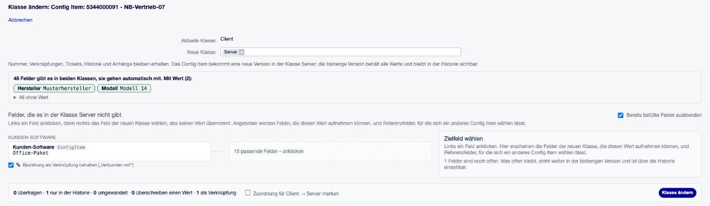

Klasse eines Config Items ändern¶
Ein Config Item landet in der falschen Klasse: Ein Import ordnet einen virtuellen Client als Server ein, oder es kommt später eine passendere Klasse hinzu. Bisher hieß das löschen und neu anlegen, samt neuer Nummer und verlorener Historie. Mit Klasse ändern wechselt das Config Item die Klasse und behält dabei Nummer, Verknüpfungen, Tickets, Historie und Anhänge.
Wer darf das?¶
Das Paket legt die Gruppe itsm-configitem-classchange an. Sie ist zunächst leer. Mitglieder
sehen die Aktion Klasse ändern im Menü der Config-Item-Ansicht. Zusätzlich braucht man
Schreibrecht (rw) auf das Config Item und auf die neue Klasse.
So funktioniert es¶
Klasse ändern öffnet ein großes Fenster über der Ansicht.
Neue Klasse wählen. Angeboten werden gültige Klassen mit einer Definition, in die Sie schreiben dürfen.
Prüfen, was mit den Feldern geschieht.
Felder, die beide Klassen haben, gehen von selbst mit. Felder mit Wert stehen als grüne Karten da, leere sind eingeklappt.
Felder mit Wert, die die neue Klasse nicht hat, stehen links. Ein Klick zeigt rechts die Felder der neuen Klasse, die den Wert aufnehmen können: grün bei gleichem Typ, gelb, wenn er umgewandelt wird. Der Hinweis sagt wie. Ein weiterer Klick ordnet beide einander zu, das × löst die Zuordnung wieder. Unter der Liste steht je Feld, warum die übrigen nicht passen.
Bereits befüllte Felder blendet die Maske aus, solange Bereits befüllte Felder ausblenden angehakt ist. Ohne den Haken erscheinen sie mit dem Wert, den sie überschreiben würden. Das Überschreiben ist rot markiert.
Was nicht zugeordnet wird, bleibt in der vorherigen Version und ist über die Historie einsehbar.
Referenzfelder bekommen besondere Unterstützung, siehe Referenzen beim Klassenwechsel.
Klasse ändern. Das Config Item bekommt eine neue Version in der neuen Klasse. Das Fenster schließt sich, und die Ansicht lädt neu.


Abb. 3 Die Maske beim Wechsel von Client zu Server.¶
Das Fenster schließt sich nur über × oder die Esc-Taste, nie durch einen Klick daneben. Haben Sie schon etwas zugeordnet, fragt es vorher nach.
Zuordnung merken¶
Mit dem Haken Zuordnung für … merken speichert OTOBO die Zuordnungen für dieses Klassenpaar. Das nächste Config Item, das zwischen denselben beiden Klassen wechselt, öffnet mit diesen Zuordnungen, oben unter Aus der gemerkten Zuordnung. Jede lässt sich lösen. Passt eine gemerkte Zuordnung nicht zum Wert dieses Config Items, wird sie nicht angeboten. Erneutes Speichern mit Haken ersetzt die gemerkte Zuordnung, ein gelöstes Feld ist dann vergessen.
Welche Werte wohin passen¶
Die Maske prüft jeden Wert einzeln, und beim Absenden prüft der Server noch einmal.
Von |
Nach |
Ergebnis |
|---|---|---|
jeder Typ |
Text, Textbereich |
Wie angezeigt: die Beschriftung einer Auswahl, der Name eines Config Items, Datum und Uhrzeit in Ihrer Zeitzone ohne Sekunden. Ein Textbereich verliert in einem einzeiligen Text seine Zeilenumbrüche. |
Auswahl, Mehrfachauswahl, Text |
Auswahl, Mehrfachauswahl |
Nur, wenn jeder Wert in der Liste des Zielfeldes steht. |
Datum und Uhrzeit |
Datum |
Die Uhrzeit entfällt. |
Datum |
Datum und Uhrzeit |
Die Uhrzeit ist 00:00. |
Referenz auf Config Item |
Referenz auf Config Item |
Nur, wenn die Klasseneinschränkung des Zielfeldes die Klasse des Config Items erlaubt. Sonst siehe Referenzen beim Klassenwechsel. |
gleicher Typ |
gleicher Typ |
Unverändert (Agent, Kundenbenutzer, Checkbox …). |
Mehrere Werte gehen nur in ein Feld, das mehrere aufnimmt. Sets, Linsen, berechnete Felder und
Felder, die nur etwas anzeigen, werden nie übertragen (Einstellung
ClassChange###ExcludedFieldTypes). Ein Set, das beide Klassen haben, geht wie jedes gemeinsame
Feld mit.
Beispiel: ein virtueller Client, als Server importiert¶
Die Inventarisierung hat einen virtuellen Client als Server eingeordnet. Beide Klassen teilen
sich viele Felder, der Server hat aber zusätzlich etwa den Formfaktor.
Tragen Sie die zuständige Person in die Gruppe
itsm-configitem-classchangeein (Admin → Agenten ↔ Gruppen,rw).Öffnen Sie das Config Item, wählen Sie Klasse ändern und dann
Client.CPU, Speicher, Modell, Seriennummer und Betriebssystem gehen von selbst mit. Links bleibt zum Beispiel Hardware Gewicht mit
18 kg.Klicken Sie Hardware Gewicht an und wählen Sie Beschreibung des Modells. Was Sie nicht zuordnen, bleibt in Version 1.
Haken Sie Zuordnung für Server → Client merken an und wählen Sie Klasse ändern. Die Ansicht zeigt den Client. Die Historie vermerkt die geänderte Klasse, und Version 1 zeigt weiter alle Felder des Servers.
Korrigieren Sie zuvor die Zuordnungsregeln Ihres Imports. Sonst legt der nächste Lauf den Server wieder an.
Gut zu wissen¶
- Es entsteht immer eine neue Version
Unabhängig von den Versions-Einstellungen der Klasse, denn nur die vorherige Version kann die Werte behalten, für die die neue Klasse kein Feld hat. Ein späterer Wechsel zurück holt diese Werte nicht in die aktuelle Version zurück.
- Die Nummer bleibt
Die fortlaufende Nummer enthält die Klasse, in der das Config Item angelegt wurde. Sie wird nicht neu vergeben, weil Tickets, Etiketten und andere Systeme sie verwenden.
- Import und Inventarisierung arbeiten je Klasse
Laufen die alten Zuordnungsregeln weiter, legt der nächste Import das Config Item wieder in der alten Klasse an. Korrigieren Sie die Regeln vor dem Wechsel.
- Klassen mit Namensmodul
Eine solche Klasse bildet den Namen selbst, er kann sich also ändern. Die Maske warnt.
- Verweise anderer Config Items
Felder, die nur Klassen ohne die neue erlauben, behalten ihren Wert. Dieses Config Item lässt sich dort aber nicht mehr auswählen. Die Maske zählt diese Verweise.
- Linsen und Tiefe Linsen anderer Objekte
Führt ihr Weg über dieses Config Item und liest dort ein Feld, das die neue Klasse nicht hat, bleiben sie danach leer. Die Maske nennt jede dieser Linsen vorab, mit dem Feld und der Anzahl der Objekte.
- Historie und Ereignis
Die Historie hält die neue Klasse und jedes übertragene Feld fest. Für eigene Erweiterungen löst der Wechsel das Ereignis
ConfigItemClassUpdateaus (Daten:ConfigItemID,OldClassID,NewClassID,VersionID).